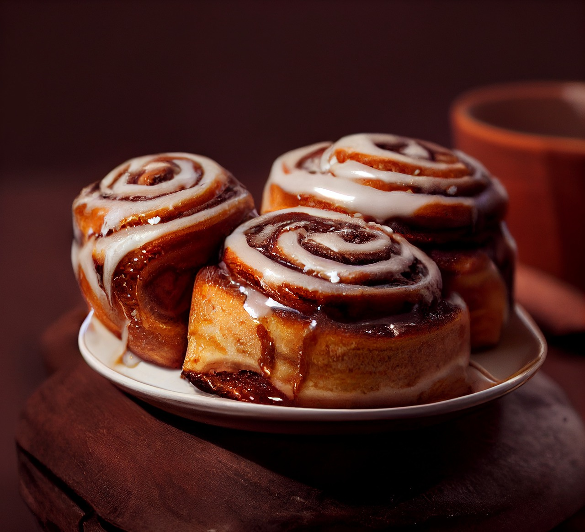

Cinnamon rolls

Description
Cinnamon buns, also called cinnamon rolls, originated in Europe.
They were brought to America by German and Swedish immigrants
and have since become a sweet breakfast staple across the country.
Ingredients
- Warm water
- Sugar
- Milk
- Butter
- Salt
- Eggs
- Flour
- Cinnamon
- Chopped pecans
Steps
- Prepare dough: Pour water into a liquid measure. Add 1 teaspoon sugar and active dry yeast; stir until dissolved. Let stand until foamy, about 10 minutes.
- Meanwhile, warm milk in a small saucepan over medium heat until it just starts to bubble around the edges; do not boil. Remove from the heat and stir in 1/4 cup sugar, 1/4 cup butter, and salt until melted. Let cool until lukewarm.
- Lightly whisk 2 eggs in a large bowl. Add yeast mixture, lukewarm milk mixture, and 1 1/2 cups flour; stir until well combined. Mix in remaining flour, 1/2 cup at a time, mixing well after each addition, until dough comes together.
- Turn dough out onto a lightly floured surface and knead until smooth, silky, and elastic, about 8 minutes.
- CPlace dough in an oiled bowl and turn to coat with oil. Cover with a damp cloth and let rise in a warm place until doubled in volume, about 1 hour.
- While the dough is rising, prepare glaze: Melt 3/4 cup butter in a small saucepan over medium heat. Add 3/4 cup brown sugar and whisk until smooth.
- Grease a 9x13-inch pan. Pour glaze mixture into the pan; sprinkle 1/2 cup pecans over top.
- Prepare filling ingredients: Place melted butter in a small bowl. Combine brown sugar, pecans, and cinnamon for filling in another bowl.
- When the dough has doubled in size, turn it out onto a lightly floured surface. Roll into a 14x18-inch rectangle. Brush 1/2 of the melted butter over the dough, leaving a 1/2 inch border unbuttered. Sprinkle brown sugar mixture over top. Start at the long edge and roll the dough tightly, pinching the seams to seal. Brush remaining butter over the dough.
- Cut dough into 15 equal rolls. Place rolls, cut-sides down, in the glaze in the prepared pan. Cover and let rise until double in size, about 1 hour.
- Preheat the oven to 375 degrees F (190 degrees C).
- Uncover and bake in the preheated oven until golden brown, 25 to 30 minutes.
- Let cool in pan for 3 minutes, then invert onto a serving platter so the glaze is on top. Scrape any remaining glaze from the pan onto the rolls.